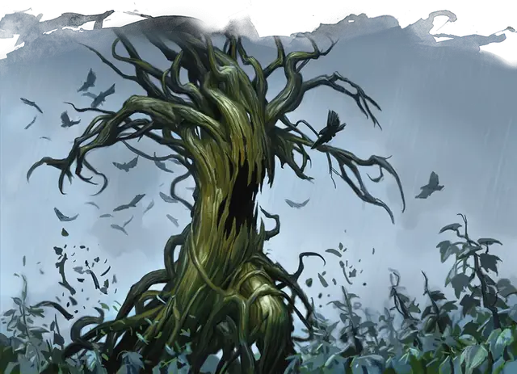

Древесная зараза
Tree Blight
Огромное Растение, Нейтральное Злое

Класс Защиты 15 Инициатива +3 (13)
Хиты 115 (10к12 + 50)
Скорость 30 футов
| мод | спас | ||
|---|---|---|---|
| СИЛ | 23 | +6 | +6 |
| ЛОВ | 10 | +0 | +0 |
| ТЕЛ | 20 | +5 | +5 |
| мод | спас | ||
|---|---|---|---|
| ИНТ | 6 | −2 | −2 |
| МДР | 10 | +0 | +0 |
| ХАР | 3 | −4 | −4 |
Иммунитеты Оглохший
Чувства пассивное Восприятие 10, Слепое зрение 60 футов
Языки знает Общий и Друидический, но не говорит
Опасность 7 (2 900 опыта; БВ +3)
Действия
Мультиатака. Зараза совершает две атаки Ветвью и использует Хватающий корень.
Ветвь. Бросок рукопашной атаки: +9, досягаемость 15 фт. Попадание: 16 (3к6 + 6) Дробящего урона.
Хватающий корень. Спасбросок Силы: Сл 17, одно видимое заразой существо Большого размера или меньше в 15 футах. Провал: Цель притягивается к заражённому растению на расстояние до 10футов по прямой и становится Схвачена (Сл высвобождения 16) одним из шести корней. Пока длится захват, цель получает 13 (2к6 + 6) Дробящего урона в начале каждого своего хода.
Бонусные действия
Щелчок зубами. Спасбросок Ловкости: Сл 17, одно Схваченное заражённым растением существо в 15 футах. Провал: 19 (3к8 + 6) Колющего урона. Успех: Только половина урона.
Бонус мастерства +3
Среда обитания Леса
Сокровища Отсутствуют
Заразы
Растения, порождённые злом
Заразы — нечестивые создания, выросшие из глубоких корней зла. Черты их жутких, скрученных, узловатых тел напоминают человеческие конечности и ужасающие челюсти. Заразы прячутся в зарослях зелени и нападают на всех, кроме Растений.
Хотя эти ужасы способны действовать самостоятельно, обычно они подчиняются породившим их зловещим силам или порочным существам, обуздавшим силу природы. Магия, создавшая заразы, часто влияет и на другую растительность, заставляя терновники, вьюны и корявые деревья захватывать дороги и поля, запруживать колодцы и ручьи, вынуждать животных покидать их среду обитания. Появление этих существ — первый признак надвигающейся волны порчи.
Древесная зараза похожа на древние мёртвые деревья с узловатыми ветвями и расщеплёнными дуплами. Эти заражённые растения жаждут крови и питаются живой плотью. Часто среди их ветвей и корней можно обнаружить следы прошлых пиршеств. Древесные заразы действуют сообща с другими заражёнными растениями, но нападают на других древесных существ, таких как пробуждённые деревья и тренты.